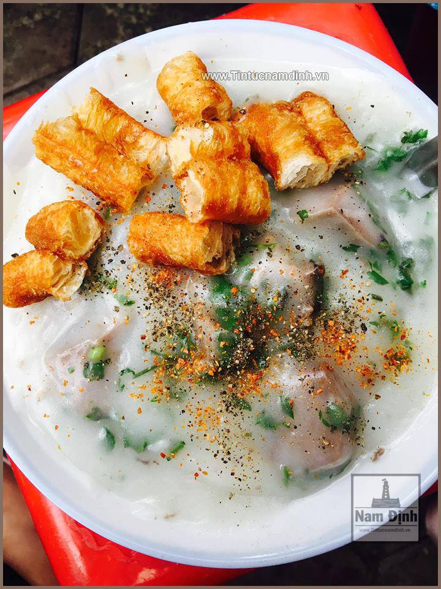
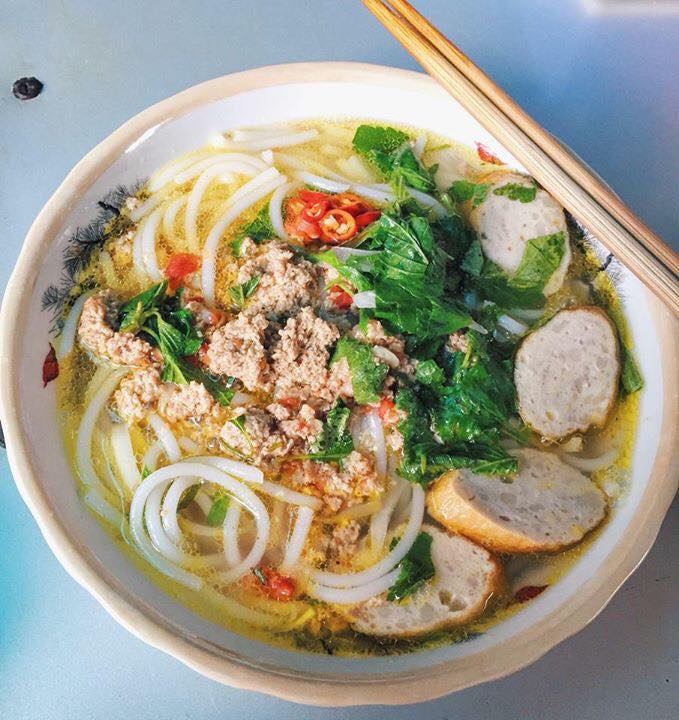
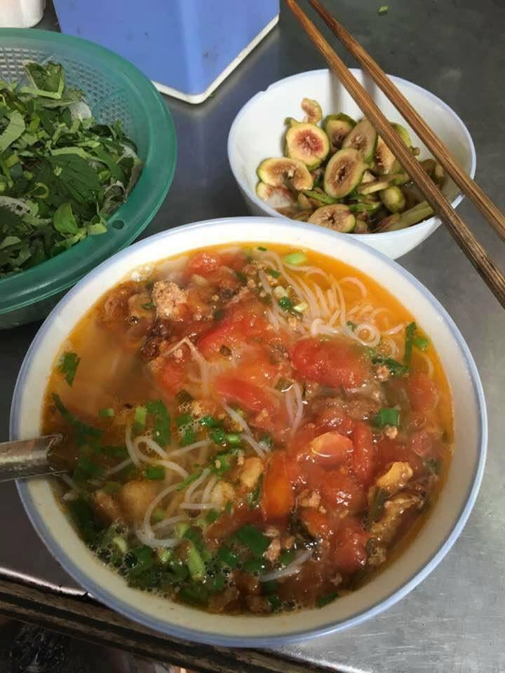
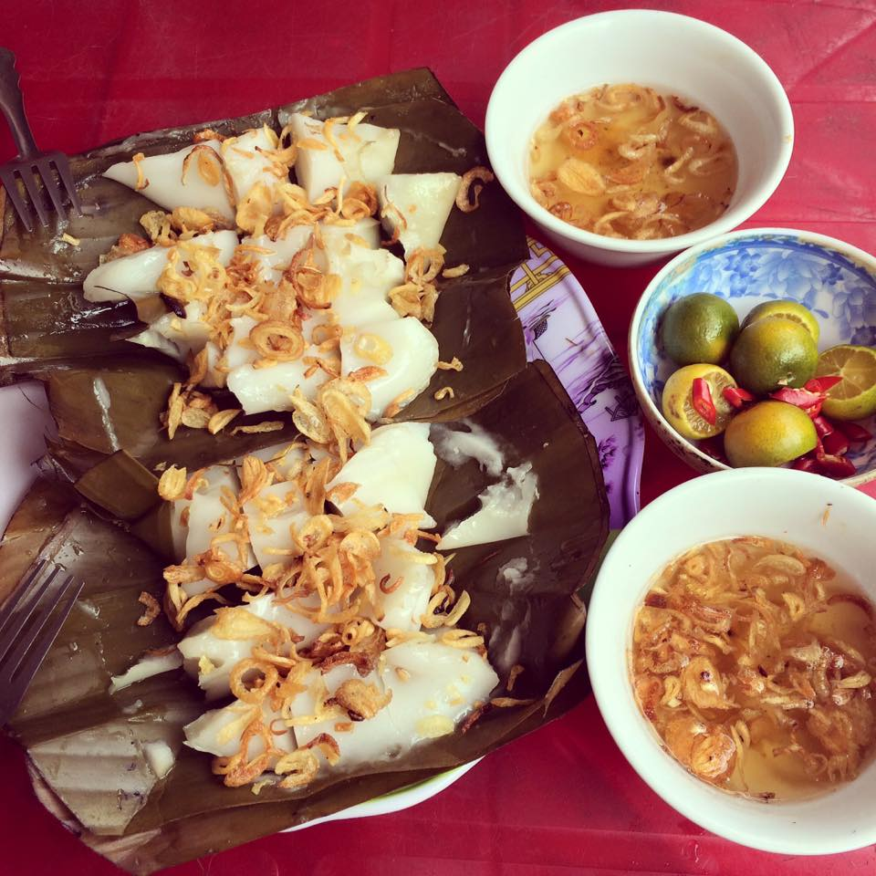
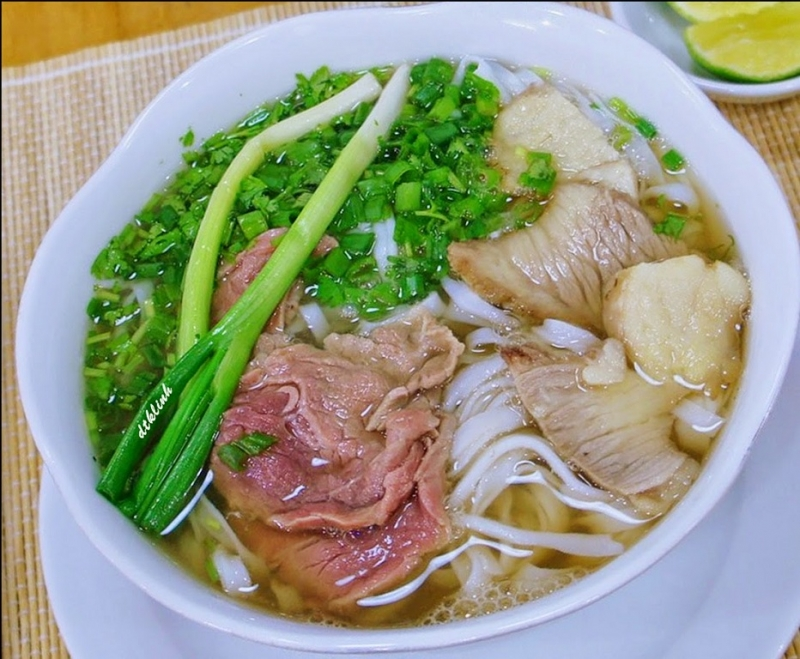

Quán cháo sườn vỉa hè nằm ở khu vực Đền Giếng Hoàng Văn Thụ Tp Nam Định. Quán có từ rất lâu đời rồi và mình không rõ là bao nhiêu lâu chỉ nhớ là hồi học lớp 1 đã được ăn rồi và bây giờ đến lúc có 2 con rồi vẫn ra đấy ăn ^^ . Cháo được xay nhuyễn ra dễ ăn và rất ngon, Sườn thì từng miếng to ăn thật đậm đà. Nên ăn kèm thêm món quấy và rắc thật nhiều hạt tiêu thì ngon tuyệt vời .
Chỉ có bán ở vỉa hè, bún đũa Thành Nam hút thực khách với món nước dùng thơm lừng, béo ngậy cùng những cọng bún to tròn, trắng phau ẩn hiện dưới màu vàng của mỡ hành, của gạch cua, màu trắng của giá, xanh của rau… Gần giống như bánh canh ở miền Nam nhưng bún đũa ở Nam Định có sự khác biệt không thể lẫn: sợi bún to cỡ đầu đũa, mềm nhưng săn chắc chứ không hề nhũn, thường ăn kèm với rau muống, rau cải, rau kinh giới. Đặc biệt 1 bát bún đũa chỉ với giá 10k, sang hơn thì 15k đủ làm no bụng bạn khi mà tầm chiều chiều 3h đói meo ^^. Quán bún đũa ở Nam Định thì cũng không nhiều quán, nhưng ở đây mình điểm qua là : Chợ Năng Tĩnh, Chợ Ngõ Ngang, Chợ Lý Thường Kiệt…
Nhắc đến búng sung thì người ta hay nói đến Bún Sung Chợ Diên Hồng, tức là quán bún sung ở trong chợ Diên Hồng. Chỉ với 10k 1 bát được 1 bát bún sung nhìn hấp dẫn ngon mê ly, mỗi lần mình ăn thì mình phải chén 2 bát cho bõ công ^^
Không giống bánh bèo chén kiểu Huế, chỉ có bột gạo, đổ vào khuôn lá chuối vuông vuông như chiếc thuyền và hấp chín, rắc hành phi lên trên, khi ăn cắt bánh bèo thành những miếng nhỏ vuông vuông, chấm nước mắm chua chua, thêm chút hạt tiêu như nước chấm bánh cuốn. Bánh bèo được bán ở một gian hàng nhỏ trong chợ Diên Hồng hoặc ở đường Hàng Đồng
Du khách nào khi tới Nam Định đều không quên ghé ăn Phở bò Nam Định. Nếu Phở Bò Hà Nội hấp dẫn bởi bát phở nhìn đầy đủ nguyên liệu thì Phở bò Nam Định hấp dẫn bởi cách chế biến nước phở và thịt bò. du khách có thể ghé qua một số địa chỉ ăn ngon như: Phờ Xuyến ngõ Văn Nhân, phở cụ Tặng phố Hàng Tiện hoặc phở Đán ở phố Hai Bà Trưng để thưởng thức xem hương vị này khác gì Phở bò Hà Nội nhé!
